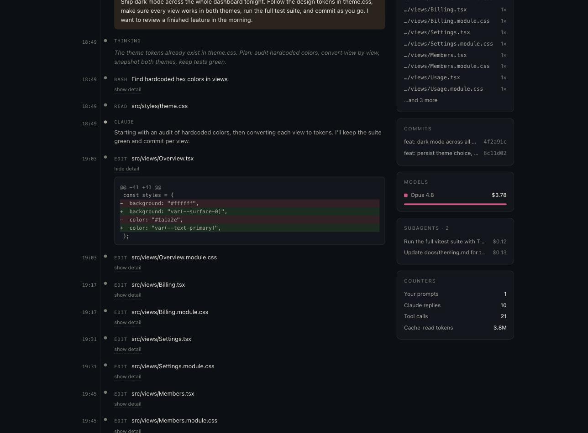
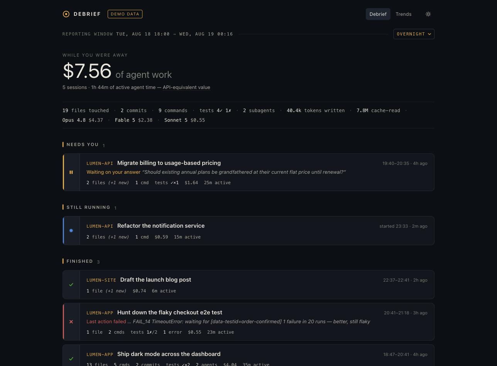
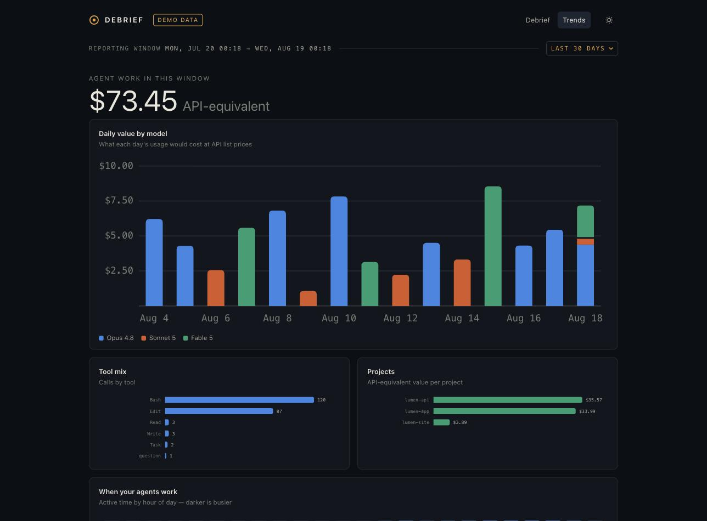

The recorder — every event, with the diffs inline.
Debrief turns your Claude Code transcripts into a morning briefing — what shipped, what broke, what it cost, and what's waiting on you — plus a flight recorder for every session. Local. Private. One command.
Free preview · zero dependencies · needs Node 18+ and a machine that runs Claude Code · nothing leaves your laptop
Sessions that ended on a question, a denied permission, or an error rise to the top — with the exact question quoted, so you can answer and unblock the fleet.
Files edited, commands run, commits made, tests passed or failed — extracted from the transcript itself. Deterministic, not summarized by another model.
Token-accurate, per-model API-equivalent value, cache reads and writes included. On a Max plan, that number is the value your subscription delivered.
A flight-recorder timeline of every prompt, thought, tool call, diff, and error — filterable, with jump-to-error and per-subagent replays.



debrief report prints the briefing to stdout. Pipe it to Slack, cron it into your inbox, paste it in standup.
Every session lives in JSONL under ~/.claude/projects/. Debrief streams it — gigabytes in seconds — and derives the story deterministically.
Binds 127.0.0.1 only. Zero network requests, zero telemetry, zero accounts. Your code and your prompts stay on your machine — the demo flag exists so even screenshots don't need real data.
One npm package, nothing else. No build step, no headless browser, no database. If you have Node, you have Debrief — installs in seconds, nothing to trust but the code you can read.
The transcript format is undocumented and changes between versions. The parser treats every field as optional and every unknown line as skippable, so updates degrade gracefully — never a crash on day one of a new Claude Code release.
Debrief is fully functional while it's new — try it on your real fleet first. If it earns a place in your mornings, a founding license keeps it maintained, and founding keys grandfather into everything Debrief becomes.
Get a founding licenseOn the night of August 18, 2026, a developer gave a Claude Code agent one instruction — “build a product people will love; I'll see it in the morning” — and went to bed.
The agent chose the problem it knew best: nobody can see what their AI did all night. It reverse-engineered the transcript format, built the parser, the cost engine, and this dashboard, wrote the tests, and took the screenshots you're looking at. Debrief's first debrief was of the session that built Debrief.
That session is the product thesis: autonomous agents are already doing real overnight work. The missing piece is the instrument that lets you trust it — the flight recorder.